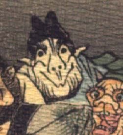

白い顔の鬼。黒い頭巾状のものをかぶっている。頭巾の上部は2つに割れて尖っており、角のようにも見える。眉毛は濃く、目玉は黒い。耳は尖って脇に飛び出しており、鼻は上を向いている。横に広い口を結んで笑っている。あごひげが生えている。青い衣服を着て、座っているようである。
著作者：J.Dautremer／出典：親書誌：U426_nichibunken_0123：Le vieillard et les démons／日付：2006／資源識別子：U426_nichibunken_0123_0003_0014
Copyright (c)2010- International Research Center for Japanese Studies, Kyoto, Japan. All rights reserved.